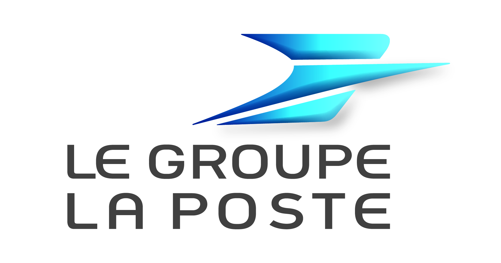
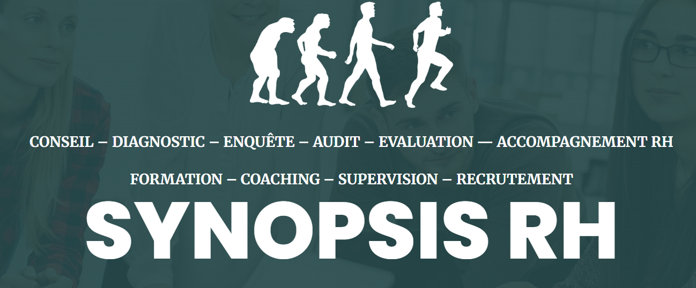

Tensions ou désengagement
Comprendre ce qui fragilise le collectif et retrouver des repères de fonctionnement partagés.
Psychologie & Data
J'aide les organisations à comprendre leurs dynamiques humaines, à prévenir les difficultés de travail et à prendre des décisions mieux éclairées.
Docteur en psychologie sociale du travail, psychologue du travail et data analyste, j'associe observation du terrain, sciences du comportement et données RH.
Domaines d'intervention
Évaluation des risques psychosociaux (RPS) • performance collective • accompagnement au changement • aide à la décision (analyse de données comportementales) • santé au travail
Types d'accompagnement
Ateliers • formations • conférences • conseils organisationnels • missions • évaluations organisationnelles (diagnostics, audits)
Publics accompagnés
Entreprises • institutions publiques • collectifs de travail • équipes dirigeantes
Quand me solliciter ?
Mon intervention part de vos questions concrètes, de votre contexte et des personnes concernées.
Comprendre ce qui fragilise le collectif et retrouver des repères de fonctionnement partagés.
Anticiper les effets humains du changement et construire des modalités d'accompagnement adaptées.
Objectiver les facteurs de risque et faire émerger des actions de prévention ancrées dans le travail réel.
Croiser enquêtes, indicateurs et données qualitatives pour mieux comprendre et décider.
Un premier échange permet de clarifier votre besoin et d'identifier la forme d'accompagnement pertinente.
Quelques organisations avec lesquelles j'ai collaboré.

